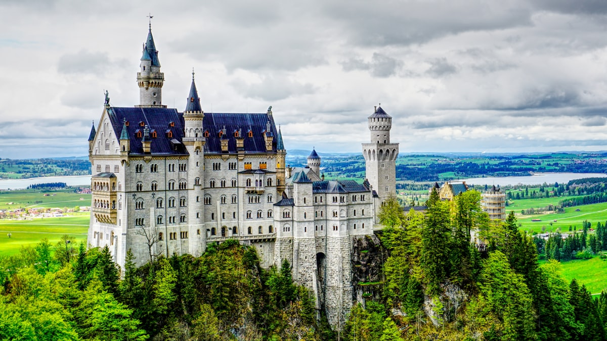
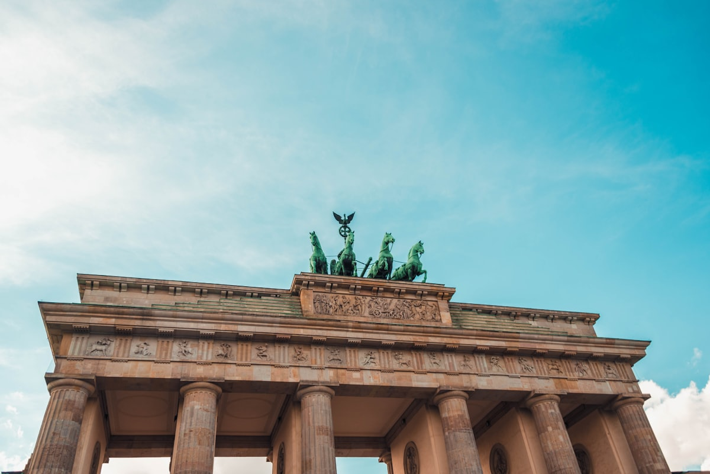
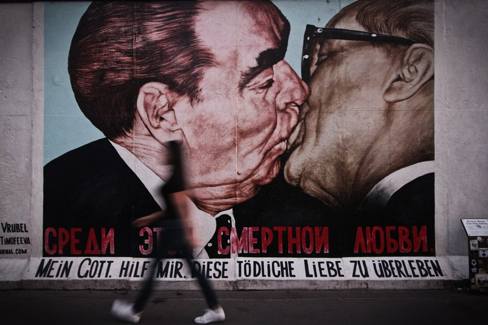
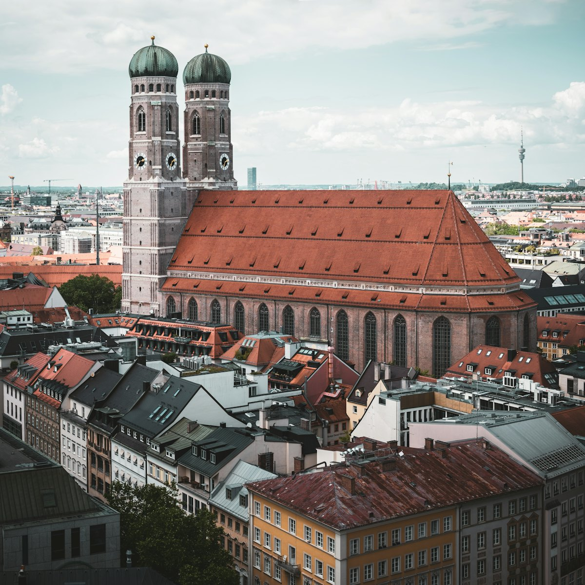
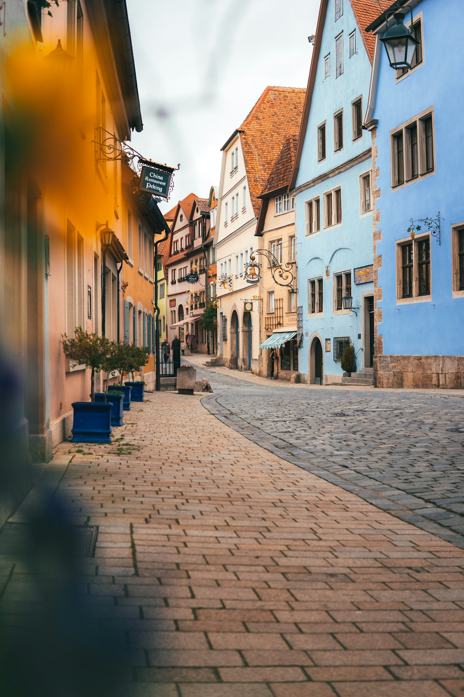
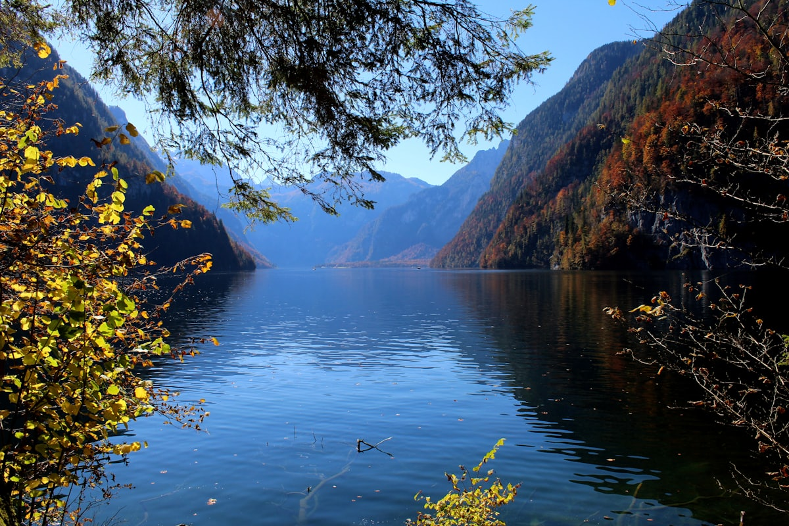
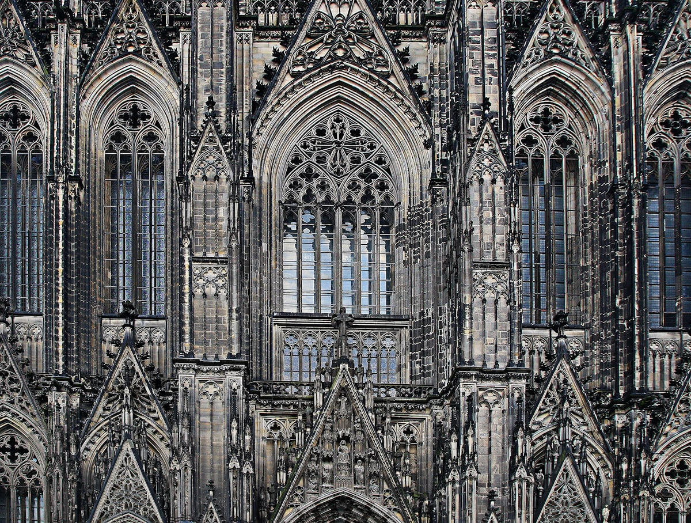
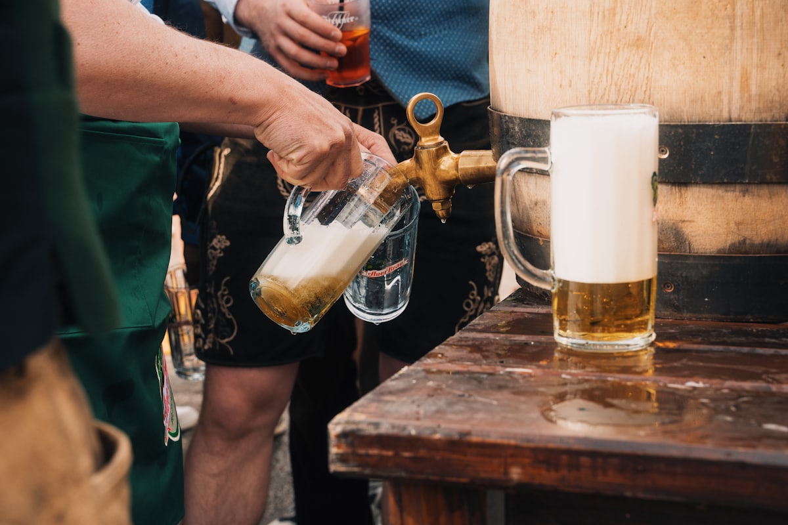

| 事项 | 结论 |
|---|---|
| 事项 | 结论 |
| 签证（最关键） | 中国护照需办申根 C 类签证：德国驻华使领馆审理，签证费 90 欧 + VFS 服务费约 19 欧，材料齐全通常数日–2 周出签，提前 1–2 个月办理 |
| 推荐方案 | 柏林 4 天 → 德累斯顿 1 天 → 法兰克福 1 天 → 罗滕堡 2 天 → 慕尼黑 4 天 → 海德堡 1 天 → 莱茵河谷 1 天 → 返程 |
| 返程约束 | 第 15 天从法兰克福/慕尼黑返程，直飞班次多但旺季需提前 1 个月订票 |
| 行程链 | 柏林 → 德累斯顿 → 法兰克福 → 罗滕堡 → 慕尼黑 → 海德堡 → 莱茵河谷 |
| 预算（人均） | 经济 12000–18000 ／ 标准 22000–32000 ／ 舒适 48000–65000（人民币） |
| 三件提前事 | ① 办申根签证 ② 订往返机票 + ICE 特价票 ③ 新天鹅堡官网预约时间段（旺季提前 1–2 月） |
| 季节提醒 | 5–10 月最舒适；9.19–10.4 啤酒节；11 月底–12 月圣诞市场（罗滕堡最美） |
| 支付 | 欧元现金（备 200–300 欧）+ Visa/Mastercard；德国小店与面包店常只收现金 |
以下为 15 天 14 晚的推荐节奏：先柏林后南下，经浪漫之路进慕尼黑，再沿海德堡—莱茵河谷回法兰克福。每日主景点 ≤2 个，城际以 ICE 高铁为主（提前订特价票），阿尔卑斯山区结合地区火车+巴士。
| 日期 | 行程 | 过夜地 | 主题 |
|---|---|---|---|
| D1 抵柏林 | 北京✈柏林（海航直飞约 9.5–11h），机场快线进城，入住米特区，傍晚勃兰登堡门灯光 | 柏林 | 抵达+预热 |
| D2 | 勃兰登堡门 → 国会大厦穹顶（预约）→ 犹太人大屠杀纪念碑 → 查理检查站 | 柏林 | 历史日 |
| D3 | 柏林墙纪念馆 → 东边画廊 → 博物馆岛（佩加蒙大修中，看新博物馆/旧博物馆） | 柏林 | 冷战与艺术 |
| D4 | 波茨坦无忧宫一日（S7 约 40min）→ 返城看柏林大教堂 + 御林广场 | 柏林 | 普鲁士王宫 |
| D5 | ICE 到德累斯顿：圣母教堂 → 茨温格宫 → 易北河畔 | 德累斯顿 | 巴洛克古城 |
| D6 | ICE 到法兰克福（中转）：罗马广场 → 美因塔/欧元塔 → 美因河畔 | 法兰克福 | 中转休整 |
| D7 | ICE 经维尔茨堡转车到罗滕堡，市政厅广场 + Plönlein + 城墙漫步 | 罗滕堡 | 抵达中世纪 |
| D8 | 圣雅各教堂 → 中世纪犯罪博物馆 → 圣诞博物馆 → 守夜人夜游 | 罗滕堡 | 中世纪深度 |
| D9 | ICE 到慕尼黑：玛丽安广场 + 新市政厅钟楼 → 圣彼得教堂登顶 → HB 皇家啤酒馆 | 慕尼黑 | 啤酒之都 |
| D10 | 新天鹅堡一日：RE 到 Füssen → 玛丽安桥 → 新天鹅堡预约场次 → 高天鹅堡外观 | 慕尼黑 | 童话城堡 |
| D11 | 国王湖一日：RE 到贝希特斯加登 → 游船 → 圣巴多罗买礼拜堂 → Obersee 徒步 | 慕尼黑 | 阿尔卑斯湖 |
| D12 | 宁芬堡宫 → 德意志博物馆 →（9.19–10.4 加啤酒节）或英国花园 | 慕尼黑 | 巴伐利亚日 |
| D13 | ICE 到海德堡：城堡 + 缆车 → 老桥 → 哲学家小径 | 海德堡 | 哲学家之城 |
| D14 | ICE 到圣戈阿 → KD 游船到吕德斯海姆（罗蕾莱之岩 + 40 城堡）→ 返法兰克福 | 法兰克福 | 莱茵河谷 |
| D15 返程 | 法兰克福老城补货 → 机场退税 → 法兰克福✈北京（直飞约 9.5–11h） | — | 收尾 |
以下为 15 天全程的逐小时执行时间线，可当作「当天打开照着走」的清单。标注 ※ 的可选项视体力与天气取舍。
| 时间 | 事项 |
|---|---|
| 02:40–06:45 | 北京✈柏林（海航 HU489 直飞约 9.5h，每周 5 班；凌晨起飞、当地清晨落地，机上补觉 |
| 07:00–09:00 | 机场快线 FEX/RE 到柏林中央火车站（约 30min），换地铁入住米特区酒店 |
| 09:30–11:30 | 倒时差缓冲：街区咖啡 Brunch（柏林人最爱的周末方式），先熟悉地形 |
| 12:00–14:00 | 午餐：柏林咖喱香肠 Currywurst（约 4 欧）+ 一杯啤酒 |
| 15:00–18:00 | 勃兰登堡门（免费）：巴黎广场 + 国会大厦外观，傍晚灯光亮起最好看 |
| 19:00 | 晚餐：德国猪肘+啤酒，早睡倒时差 |
| 时间 | 事项 |
|---|---|
| 08:00–09:30 | 勃兰登堡门（免费）：柏林地标，清晨光线最佳、游客最少 |
| 10:00–12:30 | 国会大厦玻璃穹顶（免费，需提前 2–4 周官网预约时段）：登顶俯瞰柏林全景 |
| 13:00–14:00 | 午餐：米特区小馆或咖喱香肠快餐 |
| 14:30–16:00 | 犹太人大屠杀纪念碑（免费）：2711 根水泥柱组成的静默森林 |
| 16:30–18:00 | 查理检查站（室外免费）：冷战美苏坦克对峙点，可顺逛对面墙博物馆（18 欧） |
| 19:00 | 晚餐：柏林啤酒馆，试试柏林小麦啤 Berliner Weisse |
| 时间 | 事项 |
|---|---|
| 08:30–10:30 | 柏林墙纪念馆（Bernauer Straße，免费）：保留墙体、岗楼与资料中心，历史现场感最强 |
| 11:00–13:00 | 东边画廊（免费）：1.3km 残存墙体上的涂鸦，「兄弟之吻」是必打卡机位 |
| 13:00–14:00 | 午餐：东边画廊旁土耳其 Döner 或炸鱼 |
| 14:30–17:30 | 博物馆岛（一天通票 24 欧）：佩加蒙大修中，主看新博物馆纳芙蒂蒂像、旧博物馆圆厅 |
| 18:00 | 晚餐：哈克市场啤酒馆 + 街头小吃，夜间逛老城 |
| 时间 | 事项 |
|---|---|
| 08:30 | S7 市郊铁路到波茨坦（约 40min），票价含在柏林日票内 |
| 09:30–12:30 | 无忧宫（成人约 19 欧含城堡导览）：腓特烈大帝夏宫，葡萄园梯田 + 喷泉花园 |
| 12:30–13:30 | 波茨坦老城午餐：萨克森烤猪排或湖区鱼 |
| 14:00–16:00 | 塞琪琳霍夫宫外观（波茨坦会议旧址）+ 老城世界遗产区 |
| 16:30–19:00 | 返柏林，柏林大教堂（外观）+ 御林广场（免费）：双教堂夹广场的巴洛克夜景 |
| 时间 | 事项 |
|---|---|
| 08:30 | ICE 柏林→德累斯顿（约 2h，提前订特价票 19–40 欧） |
| 10:30–12:30 | 圣母教堂（免费，登顶约 8 欧）：二战重建的巴洛克穹顶，易北河谷全景 |
| 12:30–13:30 | 午餐：萨克森烤肉 + 红卷心菜 + 土豆丸子 |
| 14:00–17:00 | 茨温格宫（广场免费，历代大师美术馆约 12 欧）：巴洛克建筑杰作，瓷器收藏世界顶级 |
| 17:30 | 易北河畔漫步看落日，晚餐：德累斯顿小香肠 + 圣诞果脯蛋糕（Stollen） |
| 时间 | 事项 |
|---|---|
| 08:30 | ICE 德累斯顿→法兰克福（约 4.5h，经莱比锡/埃尔福特），车上休息 |
| 13:00–14:00 | 入住主火车站附近（机场快线方便），午餐：苹果酒 Apfelwein + 猪排 |
| 14:30–16:30 | 罗马广场（免费）：罗默市政厅、正义喷泉、木筋房老城 |
| 16:30–18:00 | 美因塔/欧元塔外观，美因河畔散步看日落 |
| 18:30 | 晚餐：法兰克福小香肠（Frankfurter）+ 绿酱（Grüne Soße）+ 土豆沙拉 |
| 时间 | 事项 |
|---|---|
| 08:30 | ICE 法兰克福→维尔茨堡（约 1h）→ RE 到 Steinach → 接驳巴士到罗滕堡（全程约 2.5h） |
| 13:00 | 入住老城内酒店（中世纪城墙内的木筋房） |
| 14:00–16:00 | 市政厅广场 + Plönlein 明信片角（免费）：木筋房彩绘 + 双塔机位 |
| 16:00–18:00 | 城墙栈道（免费）：2.5km 完整城墙，看塔楼与陶伯河谷 |
| 18:30 | 晚餐：弗兰肯白葡萄酒 + 香肠拼盘，夜晚城墙亮灯 |
| 时间 | 事项 |
|---|---|
| 09:00–11:30 | 圣雅各教堂（约 5 欧）：圣血祭坛 + 木雕艺术，哥特建筑精华 |
| 11:30–13:00 | 中世纪犯罪博物馆（约 8 欧）：铁处女、羞耻面具、刑具，暗黑又猎奇 |
| 13:00–14:00 | 午餐：Schneeballen 雪球（罗滕堡特产糖霜甜点）+ 咖啡 |
| 14:30–17:00 | 德国圣诞博物馆 + Käthe Wohlfahrt 圣诞村（博物馆约 8 欧）：全年圣诞氛围，胡桃夹子收藏 |
| 20:00–21:30 | 守夜人夜游（约 9 欧）：提灯巡城，中世纪轶事与小镇传说 |
| 时间 | 事项 |
|---|---|
| 08:30 | 罗滕堡→（RE 到安斯巴赫转 ICE）→慕尼黑（约 3h） |
| 12:00 | 入住慕尼黑市中心（玛丽安广场/火车站周边） |
| 13:00–15:00 | 玛丽安广场 + 新市政厅（免费）：钟楼 11/12 点木偶报时，市政厅外墙极美 |
| 15:00–17:00 | 圣彼得教堂塔楼（约 5 欧）：登顶俯瞰玛丽安广场全景 |
| 17:30–19:30 | 皇家啤酒馆 HB：猪肘 + 白香肠 + 1L 啤酒，慕尼黑第一站标配 |
| 时间 | 事项 |
|---|---|
| 07:00 | 慕尼黑主火车站乘 RE 到 Füssen（约 2h）→ 巴士 78 到霍亨施旺高 |
| 09:30–11:00 | 玛丽安桥（免费）：经典机位拍新天鹅堡全景，桥窄人多要早到 |
| 11:00–13:00 | 新天鹅堡（成人 21 欧 + 2.5 欧订票费，必须官网预约场次）：路德维希二世童话城堡内部导览 |
| 13:00–14:00 | Füssen 午餐：湖区烤鳟鱼 + 白啤酒 |
| 14:30–16:30 | 高天鹅堡外观（不登堡免费）或阿尔普湖散步（0.5h 环湖） |
| 17:00 | RE 返慕尼黑，晚餐：巴伐利亚香肠店 |
| 时间 | 事项 |
|---|---|
| 07:00 | 慕尼黑 RE 到贝希特斯加登（约 2.5h）→ 巴士 841 到国王湖码头 |
| 10:00–12:00 | 国王湖游船（往返 Salet 约 29.8 欧，2026 价）：湖心回音壁小号表演，水色绿如翡翠 |
| 12:00–13:30 | 圣巴多罗买礼拜堂（下船徒步）：红顶洋葱教堂 + 湖鲜烤鱼午餐 |
| 13:30–15:30 | 徒步 Obersee 上湖（约 1.5h 往返）：高山牧场、瀑布、纯净蓝湖 |
| 16:00–19:00 | 返程慕尼黑，晚餐：白香肠 + 甜芥末 + 碱水结 |
| 时间 | 事项 |
|---|---|
| 09:00–12:00 | 宁芬堡宫（联票约 14 欧）：巴洛克夏宫，天鹅湖 + 美人厅，宫殿花园免费散步 |
| 12:00–13:30 | 午餐：慕尼黑白香肠 Weißwurst + 甜芥末（午前食用传统） |
| 14:00–17:00 | 德意志博物馆（约 17 欧）：世界最大科技馆，飞机船舶机械应有尽有 |
| 17:30–20:00 | 啤酒节特蕾西娅草坪（9.19–10.4）：1L 啤酒杯 + 巴伐利亚乐队；非啤酒节改英国花园啤酒园 |
| 时间 | 事项 |
|---|---|
| 08:30 | ICE 慕尼黑→海德堡（约 3h，提前订特价票） |
| 11:30–14:00 | 海德堡城堡（缆车往返 + 城堡约 24 欧联票）：歌德盛赞的红砂岩废墟 + 世界最大酒桶 |
| 14:00–15:30 | 老桥（免费）+ 桥门，内卡河畔午餐（河边酒馆） |
| 15:30–17:00 | 哲学家小径（免费）：老城对岸半山，俯瞰城堡与老桥全景 |
| 17:30 | 入住海德堡，晚餐：猪肘或意大利餐，老城夜市 |
| 时间 | 事项 |
|---|---|
| 08:00 | 海德堡→（ICE）→圣戈阿 St. Goar（约 2h） |
| 10:30–15:00 | KD 游船：圣戈阿→吕德斯海姆（单程约 27 欧，顺流 3h）：罗蕾莱之岩 + 40 余座中世纪城堡 |
| 15:00–17:00 | 吕德斯海姆（免费）：画眉鸟巷 Drosselgasse 酒馆街，雷司令配香肠 |
| 17:30 | ICE 返法兰克福（约 1h），入住机场附近酒店 |
| 时间 | 事项 |
|---|---|
| 08:00–10:00 | 法兰克福老城补货、咖啡，整理退税单据（蓝联/环球蓝联） |
| 10:00–11:30 | 机场快线到法兰克福机场（约 20min） |
| 13:00–14:30 | 退税 + 免税店扫货（小熊软糖、瑞士莲、双立人） |
| 15:00–07:00(+1) | 法兰克福✈北京（直飞约 9.5–11h，凌晨落地北京） |
必去（必去）/ 顺路（顺路）/ 可跳过（可跳过）。

必去
必去
必去
必去
必去
顺路
顺路图片为 Unsplash 主题图（新天鹅堡、勃兰登堡门、柏林墙涂鸦、玛丽安广场、罗滕堡、国王湖、科隆大教堂、啤酒节等均为德国实景），用于页面配图。更多免费景点：国会大厦穹顶（免费需预约）、柏林墙纪念馆、御林广场、英国花园、吕德斯海姆画眉鸟巷。
点击左侧节点可在地图上定位；点击地图 marker 会高亮对应节点。坐标为 WGS-84 转 GCJ-02 纠偏后标注。
以下为单人、不含购物的估算，人民币计价；出发地基准北京。汇率按 1 欧元 ≈ 7.8 元人民币估算。往返机票按淡季直飞 6000–8000 元计（北京⇄柏林海航直飞，提前 6 周订有优惠）。
| 项目 | 经济（12000–18000） | 标准（22000–32000） | 舒适（48000–65000） |
|---|---|---|---|
| 往返机票 | 转机 5000–7000 | 直飞 6500–9500 | 商务/灵活 14000–20000 |
| 住宿（14 晚） | 青旅/民宿 250–400/晚 | 三星酒店 600–1000/晚 | 四五星 1500–3000/晚 |
| 交通（ICE 等） | 特价票 + 市内日票 2500–3500 | ICE 特价 + 阿尔卑斯巴士 4000–6000 | ICE + 租车 + 打车 8000–12000 |
| 门票 | 基础景点约 600–1000 | 含新天鹅堡/国王湖船 1500–2500 | 全含 + 深度导览 4000–6000 |
| 餐饮（15 天） | 面包店/Döner 3000–4500 | 正常下馆子 6000–9000 | 米其林/啤酒节畅饮 15000–25000 |
带娃推荐：砍掉德累斯顿、海德堡与国王湖，把慕尼黑延长到 6 天（德意志博物馆 + 宁芬堡 + 乐高乐园 + 英国花园），罗滕堡降到 1 天。柏林部分保留动物园（世界最古老之一）与博物馆岛。德国 14 岁以下儿童多数博物馆免费。
圣诞季推荐：罗滕堡 Reiterlesmarkt + 纽伦堡圣诞市场（欧洲最大）+ 德累斯顿 Striezelmarkt + 科隆大教堂前圣诞市集，全程配热红酒（Glühwein）。冬季日照短、天气冷，室内博物馆比重提高，机票与住宿较夏季便宜 20–30%。
| 方式 | 时长 | 参考价 | 备注 |
|---|---|---|---|
| 直飞柏林（推荐） | 北京→柏林约 9.5–11h | 往返 6000–8000 元 | 海航 HU489/490，每周 5 班（除周二/周六），凌晨起飞 |
| 直飞慕尼黑 | 北京→慕尼黑约 11h | 往返 8000–12000 元 | 国航/汉莎每日 1 班，商务舱 15000+ 元 |
| 转机 | 12–20h | 5000–7000 元 | 经迪拜/多哈/伊斯坦布尔，便宜但费时 |
| 区域 | 价格/晚 | 优点 | 短板 |
|---|---|---|---|
| 柏林·米特区/选帝侯大街 | 经济 300–500 / 标准 600–1000 | 景点集中，夜生活丰富 | 旺季贵，周末满房 |
| 柏林·弗里德里希斯海因 | 经济 250–450 | 艺术家街区，性价比高 | 离核心景点稍远 |
| 慕尼黑·玛丽安广场/火车站 | 经济 450–700 / 标准 800–1400 | 老城步行可达，交通枢纽 | 啤酒节暴涨 3 倍以上 |
| 慕尼黑·伊萨河畔 | 标准 700–1200 | 安静街区，德式生活感 | 离老城步行 20 分钟 |
| 罗滕堡·老城内 | 经济 400–600 / 标准 700–1200 | 住在中世纪城墙内，一晚体验 | 圣诞季一房难求 |
| 法兰克福·主火车站周边 | 经济 400–600 / 标准 700–1100 | 机场快线方便，中转首选 | 车站周边环境一般 |